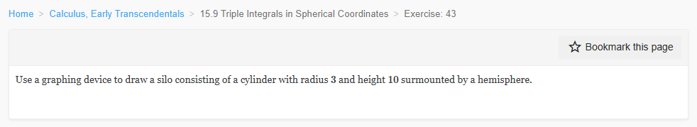
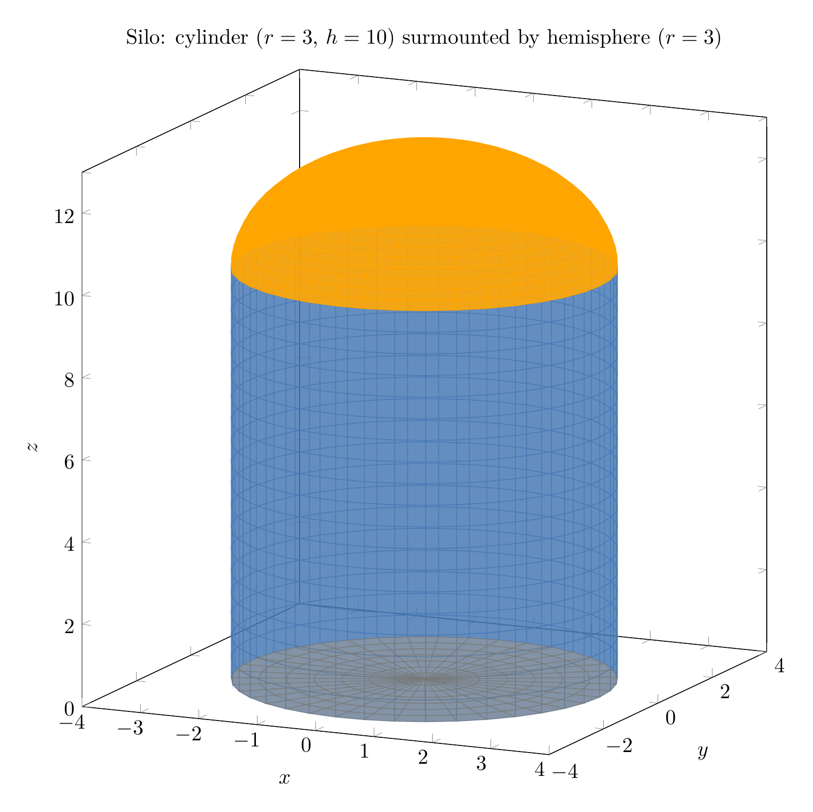
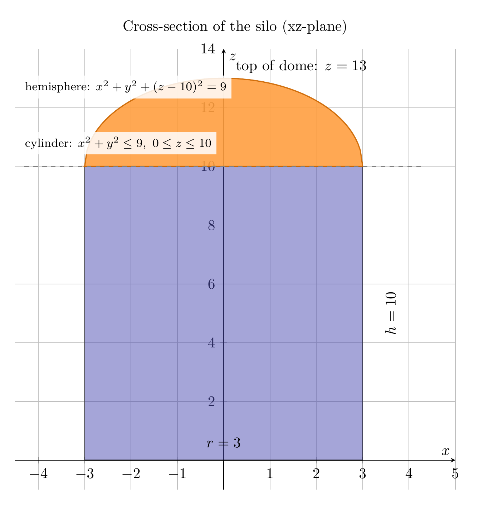

Please solve the problem in the following image.
(Image `20260928_234340_040964_utc_0800_0.png`. Alt text: Image: human_20260928_234340_040964_utc_0800)

20260928_234340_040964_utc_0800_0.png
End of problem
Answer
# Silo: Cylinder (r = 3, h = 10) Surmounted by a Hemisphere
## Setting Up the Geometry
A "silo" shape is a cylinder capped with a hemisphere. To draw it with a graphing device, describe each piece:
**Cylinder** (radius $r=3$, height $h=10$), sitting on the plane $z=0$:
$$
x^2 + y^2 \le 9, \qquad 0 \le z \le 10.
$$
**Hemisphere** of radius $3$ centered at $(0,0,10)$ (so it sits exactly on top of the cylinder, matching the rim circle $x^2+y^2=9$ at $z=10$):
$$
x^2 + y^2 + (z-10)^2 = 9, \qquad z \ge 10.
$$
The top of the dome reaches $z = 10 + 3 = 13$.
## 3D Surface Description (what you plot)
- Cylinder side: $x = 3\cos\theta,\ y = 3\sin\theta,\ z = t$ with $0 \le \theta \le 2\pi$, $0 \le t \le 10$.
- Dome: $x = 3\sin\varphi\cos\theta,\ y = 3\sin\varphi\sin\theta,\ z = 10 + 3\cos\varphi$ with $0 \le \varphi \le \pi/2$, $0 \le \theta \le 2\pi$.
- Bottom disk: $x = s\cos\theta,\ y = s\sin\theta,\ z = 0$ with $0 \le s \le 3$.
---
\documentclass[border=10pt]{standalone}
\usepackage{pgfplots}
\pgfplotsset{compat=1.18}
\begin{document}
\begin{tikzpicture}
\begin{axis}[
view={25}{12},
width=13cm, height=13cm,
xlabel={$x$}, ylabel={$y$}, zlabel={$z$},
xmin=-4, xmax=4, ymin=-4, ymax=4, zmin=0, zmax=13,
title={Silo: cylinder ($r=3$, $h=10$) surmounted by hemisphere ($r=3$)},
]
% Cylinder side surface
\addplot3[surf, shader=flat, z buffer=sort, opacity=0.6,
colormap={cyl}{rgb255=(70,120,180) rgb255=(70,120,180)},
domain=0:360, y domain=0:10, samples=40, samples y=20]
({3*cos(x)}, {3*sin(x)}, {y});
% Hemisphere dome
\addplot3[surf, shader=flat, z buffer=sort, opacity=0.9,
colormap={dome}{rgb255=(255,165,0) rgb255=(255,165,0)},
domain=0:360, y domain=0:90, samples=40, samples y=20]
({3*sin(y)*cos(x)}, {3*sin(y)*sin(x)}, {10 + 3*cos(y)});
% Bottom disk
\addplot3[surf, shader=flat, z buffer=sort, opacity=0.5,
colormap={bot}{rgb255=(120,120,120) rgb255=(120,120,120)},
domain=0:360, y domain=0:3, samples=40, samples y=8]
({y*cos(x)}, {y*sin(x)}, {0});
\end{axis}
\end{tikzpicture}
\end{document}

pgfplots_0.png
---
The 3D rendering above shows the blue cylindrical wall ($0 \le z \le 10$) and the orange hemispherical dome ($10 \le z \le 13$) sitting flush on the shared rim circle $x^2+y^2=9$ at $z=10$.
## 2D Cross-Section (the silhouette you actually draw)
The clearest way to draw a silo on a graphing device is its profile in the $xz$-plane: a $6 \times 10$ rectangle topped by a semicircle of radius $3$.
---
\documentclass[border=10pt]{standalone}
\usepackage{pgfplots}
\pgfplotsset{compat=1.18}
\begin{document}
\begin{tikzpicture}
\begin{axis}[
width=12cm, height=12cm,
xlabel={$x$}, ylabel={$z$},
xmin=-4.5, xmax=5, ymin=-1, ymax=14,
title={Cross-section of the silo (xz-plane)},
axis lines=middle,
grid=major,
]
% Cylinder rectangle filled (blue)
\addplot[fill=blue!40!gray, opacity=0.5, draw=black, thick] coordinates {(-3,0) (3,0) (3,10) (-3,10) (-3,0)};
% Hemisphere fill: top arc closed along z = 10 (orange)
\addplot[fill=orange!75, opacity=0.9, draw=orange!80!black, thick, domain=-3:3, samples=120]
{10 + sqrt(9 - x^2)} -- (axis cs:3,10) -- (axis cs:-3,10) -- cycle;
% Guide dashed line at z = 10
\addplot[dashed, gray, thick] coordinates {(-4.3,10) (4.3,10)};
% Annotations
\node at (axis cs:0,0.6) {$r=3$};
\node[rotate=90] at (axis cs:3.6,5) {$h=10$};
\node[anchor=west] at (axis cs:0.15,13.4) {top of dome: $z=13$};
\node[anchor=south west, font=\footnotesize, fill=white, opacity=0.85, text opacity=1] at (axis cs:-4.4,12.3) {hemisphere: $x^2+y^2+(z-10)^2=9$};
\node[anchor=south west, font=\footnotesize, fill=white, opacity=0.85, text opacity=1] at (axis cs:-4.4,10.4) {cylinder: $x^2+y^2\le 9,\ 0\le z\le 10$};
\end{axis}
\end{tikzpicture}
\end{document}

pgfplots_1.png
---
In the $xz$-plane you would graph:
- $z = 10 + \sqrt{9 - x^2}$ for $-3 \le x \le 3$ (the dome),
- the vertical segments $x = \pm 3$ from $z=0$ to $z=10$ (the walls),
- the base segment $z = 0$ from $x=-3$ to $x=3$,
- (for a solid look) fill the region $-3 \le x \le 3$, $0 \le z \le 10 + \sqrt{9-x^2}$.
Rotating this profile about the $z$-axis generates the full silo.
## Bonus: Volume Check via Spherical Coordinates (Section 15.9)
Since this exercise sits in the spherical-coordinates section, here is the volume computation. Put the spherical origin at the base center $(0,0,0)$. The key observation is the **rim cone**: the cone from the origin through the rim circle ($z=10$, $r=3$) satisfies $\tan\varphi = 3/10$, i.e. $\varphi_c = \arctan(3/10) \approx 16.7^\circ$.
**Piece 1: $0 \le \varphi \le \varphi_c$ (rays through the dome).** A ray hits the sphere $x^2+y^2+(z-10)^2=9$:
$$
\rho^2 - 20\rho\cos\varphi + 100 = 9 \quad\Longrightarrow\quad \rho = 10\cos\varphi + \sqrt{9 - 100\sin^2\varphi}.
$$
$$
V_1 = \int_0^{2\pi}\!\int_0^{\varphi_c}\!\int_0^{10\cos\varphi + \sqrt{9-100\sin^2\varphi}} \rho^2\sin\varphi \, d\rho\, d\varphi\, d\theta = 48\pi.
$$
**Piece 2: $\varphi_c \le \varphi \le \pi/2$ (rays through the cylinder wall).** A ray exits at the cylinder $x^2+y^2=9$, so $\rho\sin\varphi = 3$:
$$
V_2 = \int_0^{2\pi}\!\int_{\varphi_c}^{\pi/2}\!\int_0^{3/\sin\varphi} \rho^2\sin\varphi \, d\rho\, d\varphi\, d\theta = 60\pi.
$$
**Total:**
$$
V = V_1 + V_2 = 48\pi + 60\pi = 108\pi \approx 339.29.
$$
**Sanity check:** $V_{\text{cyl}} + V_{\text{hemisphere}} = \pi(3)^2(10) + \tfrac{2}{3}\pi(3)^3 = 90\pi + 18\pi = 108\pi$. ✓
$\boxed{\text{Silo: cylinder } x^2+y^2\le 9,\ 0\le z\le 10 \text{ capped by } x^2+y^2+(z-10)^2=9,\ z\ge 10;\quad V = 108\pi \approx 339.29}$